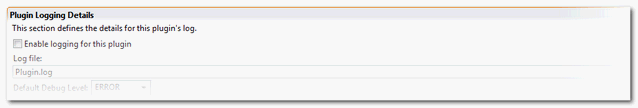

When creating complex, it is often useful to have the generator generate a specific log file during generation. This not only helps for debugging purpose but also helps when supporting the generator.
A log can be created by Generator. It is a rolling log meaning that a new log with a new numbered extension will be create each time the generator is run. The name of the logfile is set by the generator developper, together with a default level of logging.
This settings are available from the Runtime tab of the generator descriptor, as shown below:

Once the logfile has been set up. Messages can be sent to the log from either the Java code of the generator or from Velocity templates using the following syntax:
Multiple log levels are available: Error, Warning, Info, Debug, Trace. Each of these levels can be accessed through a variation on the 'logXXX' method described above.
Users of the generator (i.e. once the generator has been deployed) can control the level of logging for a specific generator. The developer of a generator can control the default level (see setting above), but the user can increase/decrease that as a property on the generator. See generator properties in the tigerstripe.xml project generation details.
© copyright 2005, 2006, 2007 Cisco Systems, Inc. - All rights reserved